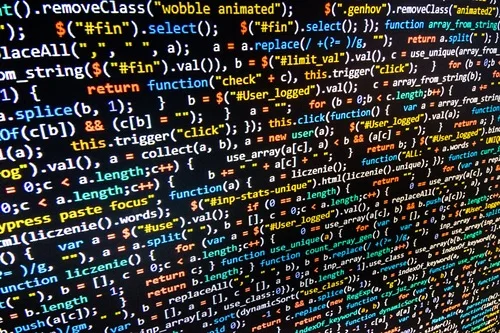
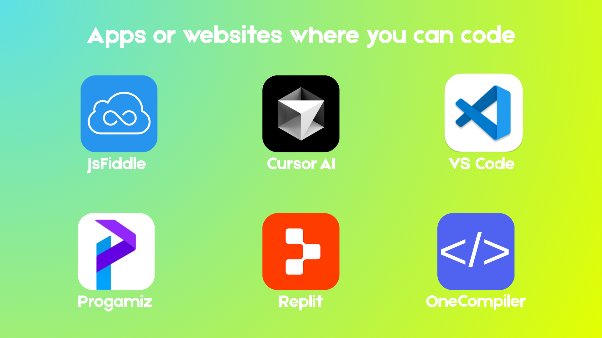

Variables
Named boxes that hold values you can reuse and update.
let score = 0;

 Learn JS
Learn JS
Clear lessons, real examples, and a path that builds confidence one concept at a time.
Intro To JS“Any application that can be written in JavaScript, will eventually be written in JavaScript.”
— Jeff Atwood, co-founder of Stack Overflow
A beginner path through JavaScript — short lessons, real examples, and zero pressure to know everything on day one.

Follow a clear route from “what is JavaScript?” to writing small interactive pages. Skip around later — but start here if you are brand new.
What JavaScript is, where it runs, and why websites need it.
Store text, numbers, and true/false — the building blocks of every program.
Use if/else so your code can react to different situations.
Package reusable actions you can call whenever you need them.
Talk to HTML with the DOM — change text, colors, and clicks.
Put it together: buttons, counters, quizzes, and small games.
These words show up a lot in JavaScript. You do not need to memorize them — you will learn them by using them.
Named boxes that hold values you can reuse and update.
let score = 0;
Text wrapped in quotes — names, messages, anything you say.
"Hello, Milo"
Math for scores, prices, timers, and pixel positions.
price * 1.1
True or false — the yes/no answers that power decisions.
isReady === true
Ordered lists: todos, colors, high scores, player names.
["a", "b", "c"]
Group related details together under one name.
{ name: "Milo" }
You do not need a fancy setup to begin. Use free online playgrounds or a desktop editor — pick whatever feels easiest and start typing.

Milo is the Learn JS guide — curious, patient, and always ready to try one more line of code. When a concept feels sticky, imagine Milo peeking over your screen and saying: “Try a tiny example. Then another.”
You will see Milo around the site as a reminder that learning to code is supposed to feel playful, not scary.
Every page follows the same calm rhythm so you always know what comes next.
One concept in plain language — usually a few paragraphs, not a textbook chapter.
Look at a small code snippet that does one clear thing you can picture.
Change a value, break it on purpose, then fix it. That is how it sticks.
When it clicks, continue. If not, re-read — there is no timer and no grade.
Small habits that make learning JavaScript much smoother.
playerScore beats x every time.
console.log counts. First button click counts more.
JavaScript is the layer that makes websites respond — clicks, animations, forms, games, and little surprises. Learn JS helps you build that muscle from the first lesson.